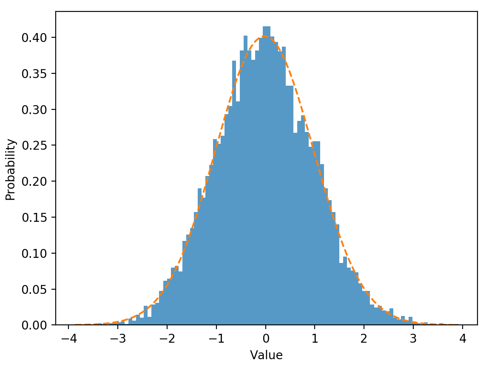
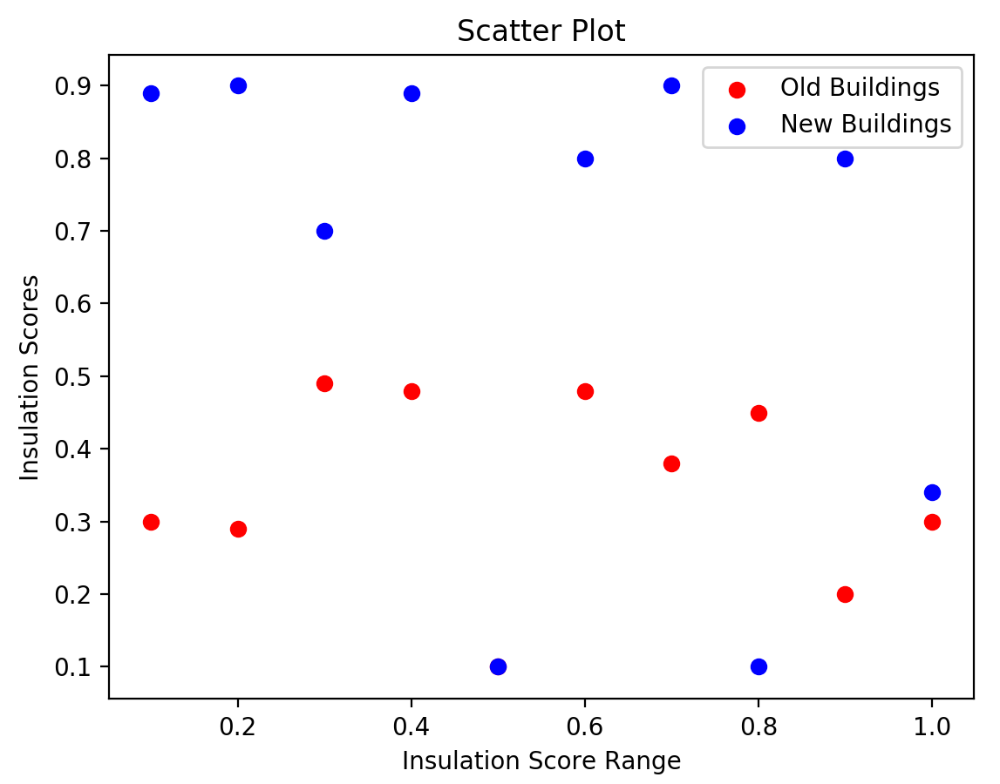
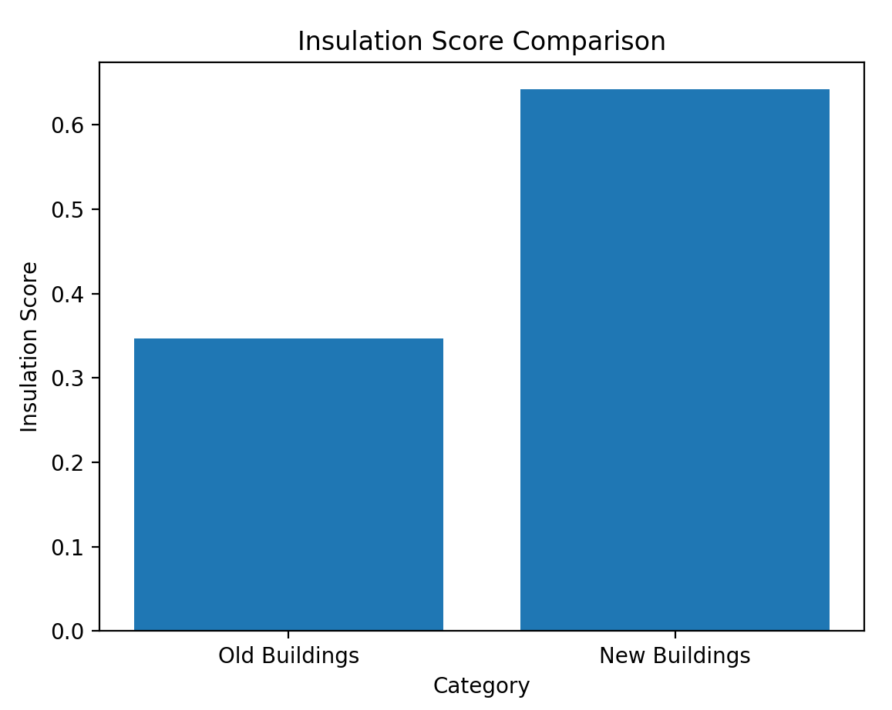

Data Visualization¶
Data visualization is relevant to almost any type of data analyses project. Visual can help you to explore the data of visualize results in an intuitive way. Although each analysis technique calls for its own unique plots and other figures, generating them in Python usually requires a number of similar steps. In this tutorial we wil deal with several plots and discuss how you can customize them to your specific needs.
In this tutorial we will use the well known matplotlib library.
1. A Simple Line Graph¶
When using matplotlib to create plots in Python, you will first need to create a figure with axes using pyplot.subplots. Then, you can use .plot() to plot data in the graph.
Consider the example below, were we plot a line graph based on four data points. We use plt.show() to open the generated plot in a viewer. You can export the graph as .png image from this viewer.
import matplotlib.pyplot as plt
# Specify x and y values.
values_x = [1,2,3,4]
values_y = [0,5,10,15]
# Create the figure with axes.
fig, axes = plt.subplots()
# Plot the data.
axes.plot(values_x, values_y)
# Show the resulting graph.
plt.show()
2. Two Approaches for Plotting¶

The image above provides a useful overview of common elements among plots. As you can see, the gridlines on the axes are referred to as ‘ticks’ (minor and major). Other than that, these elements should be familiar to you.
Plotting using matplotlib can be done in two ways: object-oriented and pyplot-based. We will discuss each of these approaches briefly below.
2.1 Object-Oriented¶
The object-oriented approach concerns explicit creation of figures and axis before plotting the data or performing any other kind of operation. This is the approach that we took in the first example. That is, we first created the figure and axes using fig, axes = plt.subplots() and then plotted the data using axes.plot(values_x, values_y).
In addition to the x and y coordinates, we can provide a label as argument to axes.plot. In this way, we can identify different data series.
import matplotlib.pyplot as plt
# Specify x and y values.
values_x = [1,2,3,4]
values_y = [0,5,10,15]
# Create the figure with axes.
fig, axes = plt.subplots()
# Plot the data.
axes.plot(values_x, values_y, label='linear')
# Show the resulting graph.
plt.show()
Other than the plot() function, there are several methods that we can call on the figure we created. For example we can add labels and a title using the methods below. Each of these take strings as arguments! In our example, these methods are called on axes.
.set_xlabel()/.set_ylabel(): Add a label to the x or y axis..set_title(): Add a title to the plot..legend(): Add a legend to the plot.
Exercise 2: Title, Labels and Legend¶
Add a title to the plot you made in the previous exercise.
Label the axes of the plot.
Add a label to the M-formed line.
Add another line to the graph which resembles a V. Also label this second data-series.
Add a legend to the plot which shows the labels and corresponding color.
2.2 Pyplot-Approach¶
The Pyplot approach lets pyplot generate and manage the figure and axes automatically. Generally, this approach is considered more suitable for interactive plots. However, it can produce the same results.
For example, the script below generates the same graph as our earlier example. Furthermore, we can use similar methods to customize the title and labels. In the example below, these methods have to be called on plt.
.xlabel()/ylabel(): Add a label to the x or y axis..title(): Add a title to the plot..legend(): Add a legend to the plot.
import matplotlib.pyplot as plt
# Specify x and y values.
values_x = [1,2,3,4]
values_y = [0,5,10,15]
# Plot the data.
plt.plot(values_x, values_y)
# Show the resulting graph.
plt.show()
Exercise 3: Pyplot-Approach¶
Repeat the steps in Exercise 1 and 2 using the pyplot-approach. (Note that the methods have slightly different names!)
3. Histograms¶
Histograms can be useful to get a feel of your data. They are therefore often using during the data exploration phase of a study.
Lets create a list of random values which approaches a normal distribution using numpy and visualize the distribution in a histogram.
Add
numpyto the import section. (If you have not installednumpyalready, please do so.)Create the set of 10000 random values using
np.random.normal(size=10000).Create a histogram using
plt.hist(). Provide the following arguments:The list of values.
The ‘density=True’ setting. This normalizes the counts such that the area of the histogram (integral) sums to 1.
The number of bins, which we will set to 100. (
bins=100)
import numpy as np
import matplotlib.pyplot as plt
# Specify the values.
values = np.random.normal(size=10000)
# Create a histogram with 100 bins.
plt.hist(values, density=True, bins=100)
# Show the resulting graph.
plt.show()
You can add a normal distribution curve to the graph using scipy.
Make sure you have
scipyinstalled and add it to the import section (see below).Determine the best normal curve fit for the data using
norm.fit().Add the this best fitting curve to the graph.
import numpy as np
import matplotlib.pyplot as plt
import matplotlib.mlab as mlab
from scipy.stats import norm
# Specify the values.
values = np.random.normal(size=10000)
# Create a histogram with 100 bins.
n, bins, patches = plt.hist(values, density=True, bins=100, alpha=0.75)
plt.ylabel('Probability')
plt.xlabel('Value')
# Determine the best fitting normal curve.
(mu, sigma) = norm.fit(values)
y = ((1 / (np.sqrt(2 * np.pi) * sigma)) * np.exp(-0.5 * (1 / sigma * (bins - mu))**2))
# Plot the normal curve with a dashed line.
plt.plot(bins, y, '--')
# Show the resulting graph.
plt.show()

Exercise 4: Histograms¶
Start by plotting a histogram using the example code above.
Add labels to the axes and a title.
Add a legend.
Decrease the number of values to 100 and the number of bins to 10. What do you notice? How closely does the histogram resemble a normal distribution?
Generate a new set of values. This time, we will specify the mean (
mu) and the standard deviation (sigma) beforehand. Generate the set of values usingmu + sigma * np.random.randn(1000). Check if the generated histogram indeed shows the specified mean and st. dev parameters.
4. Scatter Plots¶
Developing scatterplots is another common way to explore patterns in your data. As a hypothetical example, consider two categories of buildings
Old buildings
New buildings
Now imagine that for each of these buildings, we have a score for their insulation quality ranging from 0 (extremely bad) to 1 (perfect). We would like to know if there is a pattern among old and new buildings when it comes to the quality of their insulation. We have a list of insulation scores for both old and new buildings (old_scores and new_scores). We specify the range of the scores ranging from 0 to 1 with a stepsize of 0.1 (range_scores=[0.1, 0.2, 0.3, 0.4, 0.5, 0.6, 0.7, 0.8, 0.9, 1.0]). Then, we use scatter() to plot both datasets. We can specify a color to distinquish the old from the new buildings. Again, we can use plt.legend() to add a legend to our figure.
import matplotlib.pyplot as plt
# Specify the data and range.
old_scores = [0.30, 0.29, 0.49, 0.48, 0.10, 0.48, 0.38, 0.45, 0.20, 0.30]
new_scores = [0.89, 0.90, 0.70, 0.89, 0.10, 0.80, 0.90, 0.100, 0.80, 0.34]
range_scores=[0.1, 0.2, 0.3, 0.4, 0.5, 0.6, 0.7, 0.8, 0.9, 1.0]
# Create the figure.
plt.figure()
# Create the scatter plots.
plt.scatter(range_scores, old_scores, color='r', label='Old Buildings')
plt.scatter(range_scores, new_scores, color='b', label='New Buildings')
# Add title, labels and legend.
plt.xlabel('Insulation Score Range')
plt.ylabel('Insulation Scores')
plt.title('Scatter Plot')
plt.legend()
# Show the resulting graph.
plt.show()

5. Bar-Charts¶
Bar charts are a way to present categorical data. They can be usefull to compare the values of a specific variable for several categories in your data. To demonstrate this, we will again use our example of insulation scores of old and new buildings. We use the bar() function from matplotlib to generate a bar chart showing the mean insulation score for both categories. We can specify several parameters for this function. For example:
x: The x coordinates of the bars.height: The height of the bars. (In our case, the average insulation score for the two categories.)width: The width of the bars.
import matplotlib.pyplot as plt
from statistics import mean
# Create the figure.
fig = plt.figure()
# Specify the raw data.
old_scores = [0.30, 0.29, 0.49, 0.48, 0.10, 0.48, 0.38, 0.45, 0.20, 0.30]
new_scores = [0.89, 0.90, 0.70, 0.89, 0.10, 0.80, 0.90, 0.100, 0.80, 0.34]
# Calculate the average insulation scores for both categories.
old_ave = mean(old_scores)
new_ave = mean(new_scores)
# Specify the data for plotting.
categories = ['Old Buildings', 'New Buildings']
scores_ave = [old_ave, new_ave]
# Specify the title and labels.
plt.title("Insulation Score Comparison")
plt.xlabel("Category")
plt.ylabel("Insulation Score")
# Create the bar chart.
plt.bar(categories, scores_ave)
# Show the resulting graph.
plt.show()

Exercise 6: Bar-Charts¶
Replicate the bar-chart from the example.
Are the results in line with the scatterplot?